Cylinder Block (II)
Cylinder Block Disassembly Assembly (II)
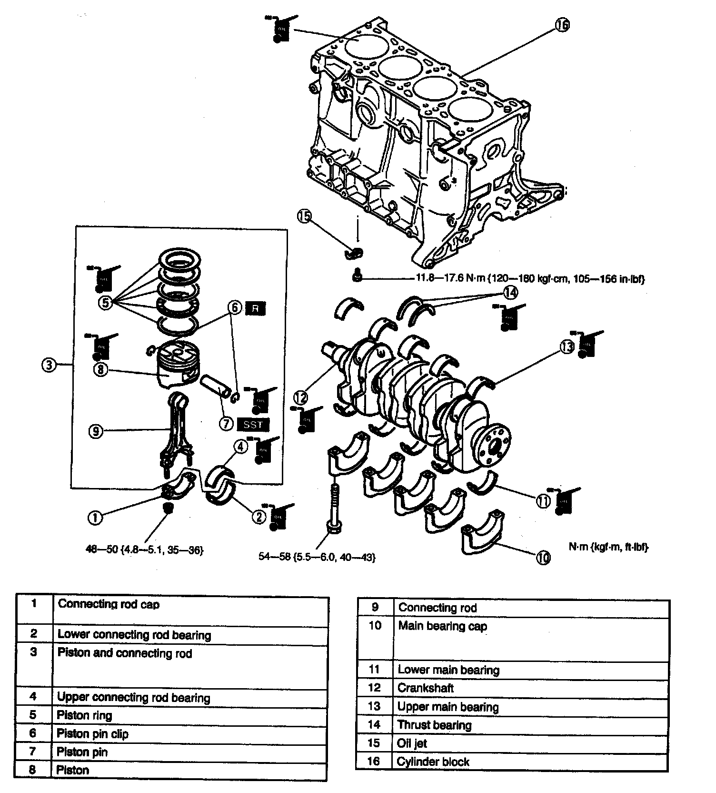
1. Disassemble in the order indicated in the table.
2. Assemble in the reverse order of disassembly.
Piston and connecting rod disassembly note
1. Inspect the connecting rod side clearance.
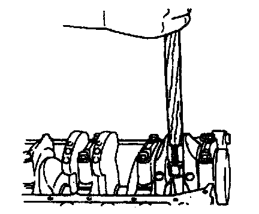
2. Use the handle of a hammer to remove the piston and connecting rod through the top of the cylinder block.
3. Inspect the piston and connecting rod.

4. Remove the piston rings by using a piston ring expander.
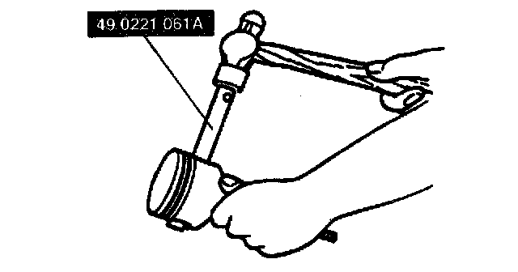
5. Remove the piston pin by using the SST.
Main bearing Cap disassembly note
1. Inspect the crankshaft end play.
Main Bearing Cap Disassembly Sequence:
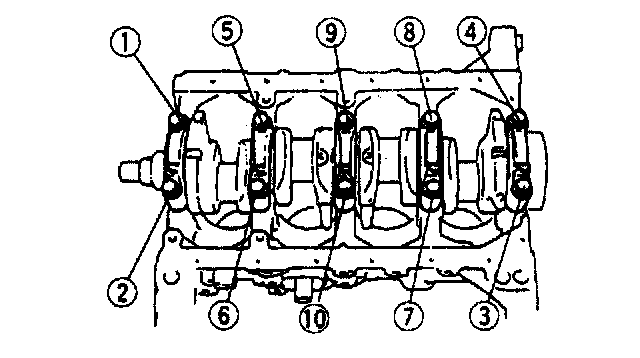
2. Loosen the main bearing cap bolts in two or three steps in the order shown.
3. Remove the main bearing caps.
Main bearing cap assembly note
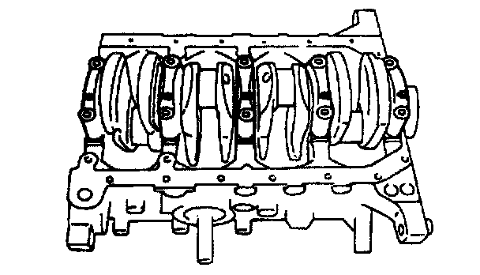
1. Install the crankshaft and the main bearing caps according to the cap number and "<-" mark which indicates front side.
Main Bearing Cap Assembly Sequence:
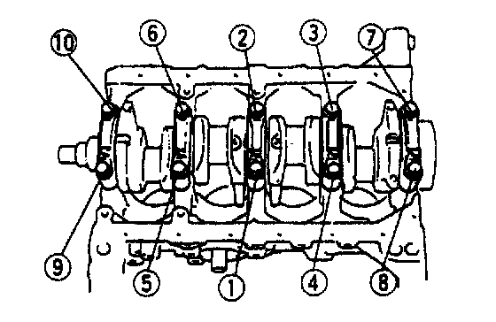
2. Tighten the main bearing cap bolts in two or three steps in the order shown.
Piston and connecting rod assembly note
1. Install one piston pin clip into the clip groove in the piston.
2. Assemble the piston and the connecting rod.
3. Apply clean engine oil to the piston pin.
4. Install the piston pin from the side opposite the clip.
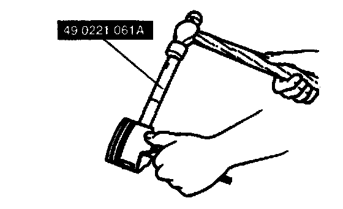
5. Tap the piston pin in with the SST until the pin contacts the clip. If the pin cannot be installed easily, replace the connecting rod.
6. Install the second clip into the dip groove in the piston.
7. Install the three-piece oil rings on the pistons.
1) Apply clean engine oil to the oil ring spacer and rails.
2) Install the oil ring spacer with the ends upward.
Note:
^ The upper and lower rails are the same. They can be installed with either face upward.
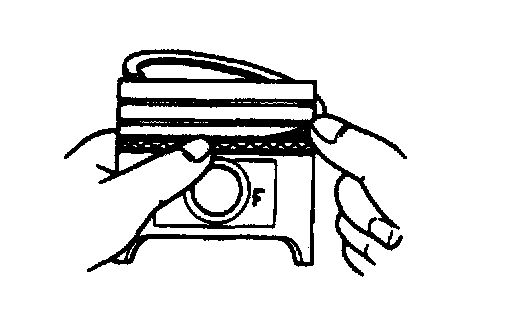
3) Install the upper and lower rails.
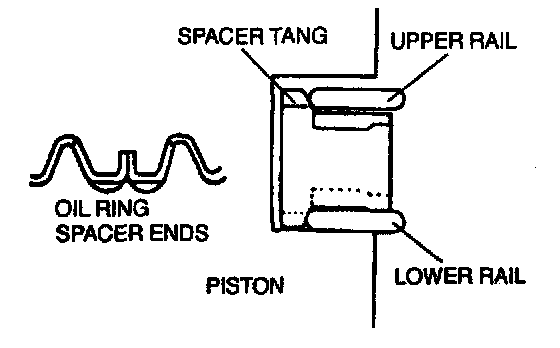
8. Verify that the spacer tang separates the rails, and that the rails turn smoothly in both directions.
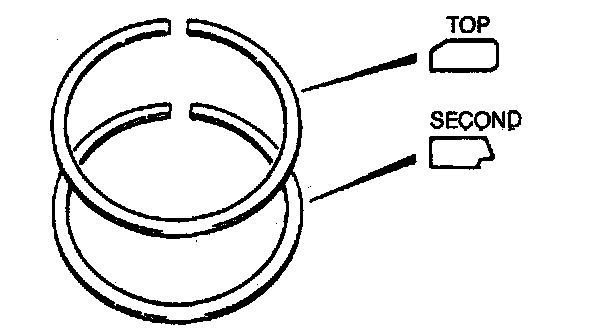
9. Using a piston ring expander, install the second ring with the scraper face downward.
10. Using a piston ring expander, install the top ring with the chamfer facing upward.
11. Apply clean engine oil to the top and second piston rings.
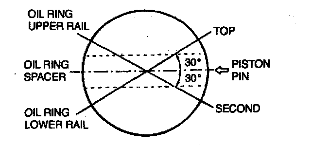
12. Position the end gaps of the rings.
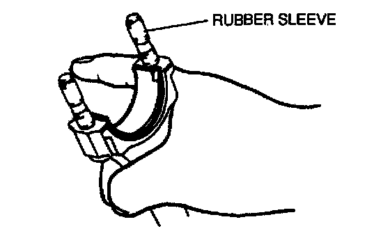
13. Protect the connecting rod bolts with rubber sleeves.
14. Apply clean engine oil to the cylinder walls, pistons, and piston rings.
15. Inspect the piston rings for correct end gap alignment.
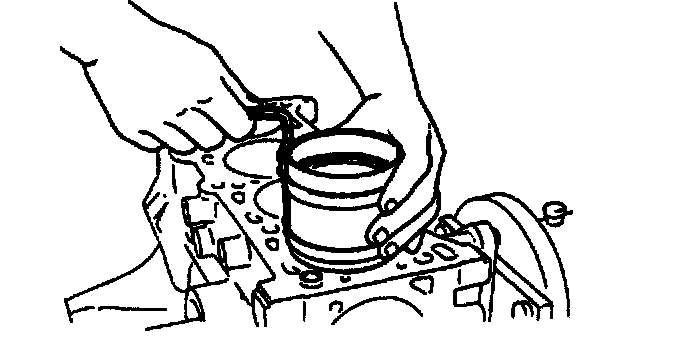
16. Insert each piston into the cylinder block with the F mark facing the front of the engine. Use a piston ring compressor.
Connecting rod cap assembly note
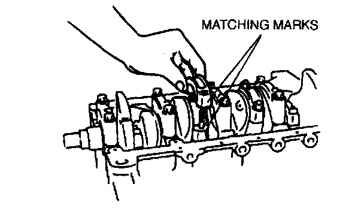
1. Align the matching marks on the cap and the connecting rod and install the connecting rod cap.